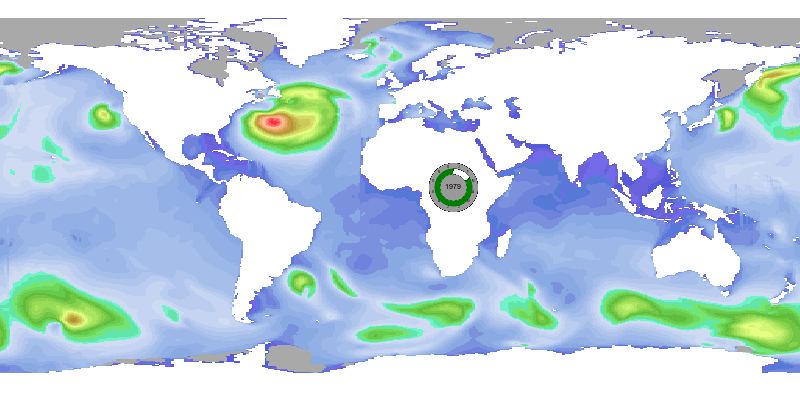

Although intended for use with NEMO output there is little to prevent nemosim being used with any other gridded dataset that represents geospatial data. The main requirements that need to be met are:
- Easily identified dimension variables that can be used to determine the size of the input data field
- Data coordinates that can be described by two-dimensional longitude and latitude fields and
- All data can be read from netcdf files.
It is often possible to satisfy these requirements with minimal manipulation of input data. Converting other data formats into netCDF will not be covered here but there are plenty of internet resources dedicated to the subject. Suggestions for ensuring the first two criteria can be met will be presented using an example dataset obtained from a near-global configuration of WaveWatch III (WW-III)
Firstly, lets examine the raw data file:
ncdump -h ./data/hs_197903.nc
netcdf hs_197903 {
dimensions:
time = UNLIMITED ; // (1 currently)
latitude = 344 ;
longitude = 512 ;
variables:
short hs(time, latitude, longitude) ;
hs:long_name = "significant_wave_height" ;
hs:standard_name = "significant_height_of_wind_and_swell_waves" ;
hs:units = "m" ;
hs:_FillValue = -32767s ;
hs:scale_factor = 0.002f ;
hs:add_offset = 0.f ;
hs:valid_min = 0 ;
hs:valid_max = 32000 ;
float latitude(latitude) ;
latitude:units = "degree_north" ;
latitude:long_name = "latitude" ;
latitude:standard_name = "latitude" ;
latitude:valid_min = -90.f ;
latitude:valid_max = 90.f ;
latitude:axis = "Y" ;
float longitude(longitude) ;
longitude:units = "degree_east" ;
longitude:long_name = "longitude" ;
longitude:standard_name = "longitude" ;
longitude:valid_min = -180.f ;
longitude:valid_max = 180.f ;
longitude:axis = "X" ;
double time(time) ;
time:long_name = "julian day (UT)" ;
time:standard_name = "time" ;
time:units = "days since 1990-01-01T00:00:00Z" ;
time:conventions = "relative julian days with decimal part (as parts of the day )" ;
time:axis = "T" ;
// global attributes:
:product_name = "197903.nc" ;
:area = "*** SMC 50k Global Model ***" ;
:latitude_resolution = " 0.4687500" ;
:longitude_resolution = " 0.7031250" ;
:southernmost_latitude = "-78.0468750" ;
:northernmost_latitude = "82.7343750" ;
:westernmost_longitude = "0.3515630" ;
:easternmost_longitude = "359.6484375" ;
:minimum_altitude = "-12000 m" ;
:maximum_altitude = "9000 m" ;
:altitude_resolution = "n/a" ;
:start_date = "1979-03-01T00:00:00Z" ;
:stop_date = "1979-03-31T23:00:00Z" ;
:history = "Thu Feb 23 17:02:16 2017: ncks -v hs -d time,0,0,1 197903.nc hs_197903.nc\n",
"" ;
:NCO = "\"4.5.5\"" ;
}
This meets the first criterion since the longitude and latitude dimensions clearly specify the size of the 2-dimensional field to be imaged. By default, nemosim expects these dimension variables to be named ‘x’ and ‘y’ so without further input, nemosim will be unable to identify the correct dimensions:
./nemosim -f ./data/hs_197903.nc -d hs -o nocoord.png -nomask
NetCDF: Invalid dimension ID or name
STOP Stopped
This first hurdle can be overcome by explicitly naming the dimension variables using the -xdim and -ydim options. E.g.:
./nemosim -f ./data/hs_197903.nc -d hs -o nocoord.png -nomask -xdim longitude -ydim latitude
Error: need both nav_lon and nav_lat fields to proceed.
Processing terminated
The problem now is that nemosim expects the 2-dimensional arrays containing the coordinate data to be named nav_lon and nav_lat and to be available in the main dataset. In the current case, the data does not contain 2-d coordinate fields since the grid is regular and described by two 1-d arrays.
We can overcome this restriction by taking advantage of nemosim‘s tiered approach to locating the coordinate fields. The 2-dimensional fields expected are always named ‘nav_lon’ and ‘nav_lat’ but these may be extracted from any of three possible sources:
- The main dataset named by the -f option (default)
- The bathymetry file as named by the -bathy option (or NEMOBATHYFILE environment variable) (iThe selection of coordinates from the bathymetry file is activated by the -bcoord option)
- A named coordinate dataset as specified by the -coordf option
The previous command did not name a bathymetry or coordinate file and failed to find the required nav_lon and nav_lat fields in the main dataset. The easiest solution, which avoids changing the source data is to construct 2-d coordinate fields in a separate file and provide this to nemosim. A short python script is as good a way as any to achieve this:
cat navadd.py
from netCDF4 import Dataset
import numpy as np
import sys
pathin = sys.argv[1]
pathout = sys.argv[2]
fw = Dataset(pathin)
hs = fw.variables['hs'][:,:,:]
lon = fw.variables['longitude'][:]
lat = fw.variables['latitude'][:]
fw.close()
nx = hs.shape[2]
ny = hs.shape[1]
nav_lon = np.zeros((ny,nx))
nav_lat = np.zeros((ny,nx))
for nnx in range(nx):
for nny in range(ny):
nav_lon[nny,nnx] = lon[nnx]
nav_lat[nny,nnx] = lat[nny]
pathstart = pathout
fo = Dataset(pathstart, 'w', format='NETCDF4')
nxo = fo.createDimension('x', nx)
nyo = fo.createDimension('y', ny)
lono = fo.createVariable('nav_lon', 'f4',('y','x'))
lato = fo.createVariable('nav_lat', 'f4',('y','x'))
lono[:,:] = nav_lon
lono.long_name = 'longitude'
lono.standard_name = 'longitude'
lono.units = 'degrees_east'
#
lato[:,:] = nav_lat
lato.long_name = 'latitude'
lato.standard_name = 'latitude'
lato.units = 'degrees_north'
#
fo.close()
Such a script can be used (i.e. python2.7 navadd.py ./data/hs_197903.nc navout.nc) to produce a navout.nc file containing:
ncdump -h navout.nc
netcdf navout {
dimensions:
x = 512 ;
y = 344 ;
variables:
float nav_lon(y, x) ;
nav_lon:long_name = "longitude" ;
nav_lon:standard_name = "longitude" ;
nav_lon:units = "degrees_east" ;
float nav_lat(y, x) ;
nav_lat:long_name = "latitude" ;
nav_lat:standard_name = "latitude" ;
nav_lat:units = "degrees_north" ;
}
Now armed with this external coordinate field the first image can be produced:
./nemosim -f ./data/hs_197903.nc -d hs -o example18a.png -nomask \
-xdim longitude -ydim latitude -coordf navout.nc
There are still some issues with this image. Firstly lets apply a better mask which will remove the large negative values assigned as a FillValue from the data range calculation. This can be done by declaring the undefined value using the -vmask option:
./nemosim -f ./data/hs_197903.nc -d hs -o example18b.png -nomask \
-xdim longitude -ydim latitude -coordf navout.nc -vmask -32767 0.0
This still isn’t ideal because the FillValue here is used both for land (masked) points and missing data points where wave heights are not available in ice covered regions. Ways of creating a distinction between these regions will be explored later but a more worrying issue at the Greenwich Meridion needs addressing next.
The odd behaviour at the Greenwich Meridion arises because of another assumption that nemosim has made about the dataset provided. That is, a global dataset is assumed to have two overlap columns in the longitudinal direction such that:
array(1 ,:) = array(nx-1,:)
array(nx,:) = array(2 ,:)
where nx is the length of the longitudinal dimension. There is also an assumption that the northern most row is folded in an ORCA-style tripolar grid fashion but that is not evident here since the wave model does not cover the northern section of the Arctic basin. With the example wave data, the longitudinal coverage is a complete 360 degrees but without the overlap columns. An option, -nooverl, is provided for this case which adds the expected columns and populates them with duplicated data so that nemosim‘s standard mapping algorithms will work correctly.:
./nemosim -f ./data/hs_197903.nc -d hs -o example18c.png -nomask \
-xdim longitude -ydim latitude -coordf navout.nc -vmask -32767 0.0 \
-nooverl

To distinguish between the land points and missing data regions it will be necessary to introduce a land mask. In this case a simple land mask can be derived from the depth field which WW-III outputs with large negative values over land:
ncap2 -s "Bathy_level=Depth; where(Bathy_level > 0) Bathy_level = 1; elsewhere Bathy_level = 0" \
Depth.nc Bathy.nc
and this mask can be applied instead of defining the fillvalue:
./nemosim -f ./data/hs_197903.nc -d hs -o example18d.png \
-xdim longitude -ydim latitude -coordf navout.nc \
-nooverl -bathy ./data/Bathy.nc
The result certainly distinguishes the missing data regions:
but this is a fortunate consequence of the missing data regions having a large negative value which has skewed the colourscale such that no blues occur in the valid data areas. To take control over the colour assigned to the missing data region is going to require creative use of the overlay functionality.
The problem here is that a single FillValue has been used for both land and missing data regions and nemosim can’t employ a bathymetry mask and a missing value mask at the same time. We can, however, use the land mask as an overlay dataset to create the impression of distinct Fillvalues. To do this we require the inverse of the land mask (i.e. 1 over land, 0 over ocean) and a two tone palette which is white in its lower half and black in the upper half (twotone.pal). Creating the inverse mask is a simple variation on the earlier command:
ncap2 -s "Bathy_level=Depth; where(Bathy_level > 0) Bathy_level = 0; elsewhere Bathy_level = 1" \
Depth.nc Bathy2.nc
Now we can re-instate the FillValue, this time as the second vmask entry to provide a gray fill, and employ the inverse mask as an overlay. Also, for good measure, define the image size to give a 2:1 aspect ratio:
./nemosim -f ./data/hs_197903.nc -d hs -o example18e.png -nomask \
-xdim longitude -ydim latitude -coordf navout.nc -vmask -50.0 -32767 \
-nooverl -f2 ./data/Bathy2.nc -d2 Bathy_level -limits2 0.25 0.75 \
-overlay -cs2 twotone.pal -r 800 400
Note The first vmask entry is set to -50. to avoid any danger of valid data points being mistaken as land points. Note also, the limits on the overlaid data are chosen to ensure that all points with zero value will be assigned the first colour from the palette which will be transparent in the overlay. All points set to one will be set to the final colour (in this case black).
As a final dressing it is often useful to provide more detail over land areas. This isn’t needed for scientific purposes but can give a more familiar ‘atlas-style’ appearance to images used for public outreach purposes. nemosim supports this requirement by providing the -transp_bg option which makes any pixels with the background colour transparent. Note that the output image format must support transparency for this to be effective; currently that limits the output format choice to png (the default). Here is an example of this in action:
./nemosim -as example18e.png -o example18f.png \
-transp_bg -dateclk 24 453 187 01031979
where a date clock has also been added for good measure. Depending on your browser, the apparent effect has probably been to turn the land areas white but they are, in fact, transparent allowing the browser background colour to show through:
Now all that is needed is to prepare a separate image from a suitable global topography dataset which shows the orography over land. The land relief should be shown in a colour range that is not prevalent in the oceanic data colour-scale; the image size and aspect ratio must match and the longitude of the lefthand edges should match so that the land masses align. This last point is sometimes easier to achieve after producing a base image by using the -roll option of the ImageMagick utility: mogrify. In fact, for this purpose I keep a base image at the highest resolution that I am likely to use (2048x1024) and rescale and roll a copy to fit as needed. For example:
cp gebcolike_2048.png gebcolike_sm.png
mogrify -resize 800x400 gebcolike_sm.png
mogrify -roll +69+0 gebcolike_sm.png
which produces:
Note this image has been especially prepared for the WW-III data with ivory coloured regions in the polar regions that the wave model does not cover and a black circle in the date clock location. Compositing the two images together produces the final image:
composite example18f.png ./doc/figs/gebcolike_sm.png example18g.png
{kind=link}
{kind=link}
{kind=link}
{kind=link}
{kind=link}
{kind=link}
{kind=link}